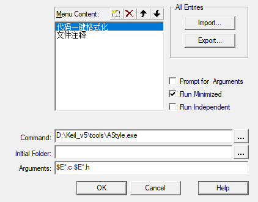
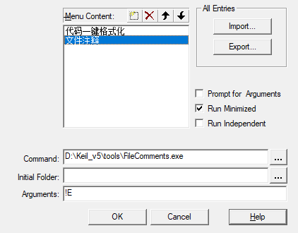
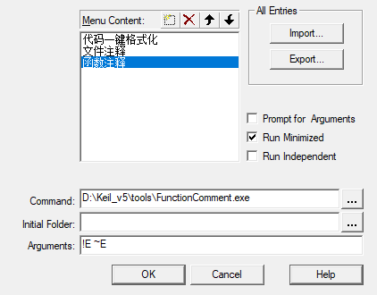
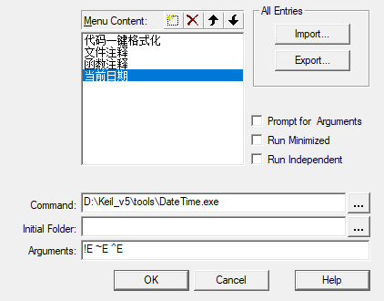
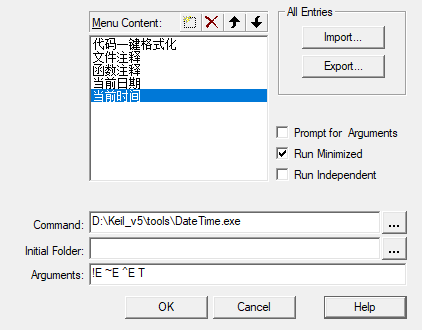

一、添加插件
1、Astyle：一键格式化代码
Command：Astyle.exe路径
Arguments：$E*.c $E*.h

2、FileComments：文件注释
Command：FileComments.exe路径
Arguments：!E

3、FunctionComment：函数注释
Command：FunctionComment.exe路径
Arguments：!E ~E

4、DateTime：当前日期
Command：DateTime.exe路径
Arguments：!E ~E ^E

5、DateTime：当前时间
Command：DateTime.exe路径
Arguments：!E ~E ^E T

二、KEIL工程文件说明

三、使用git
1、加载SVCS

2、修改Stage：一键添加所有修改
可以做如下修改一键添加所有代码
| Stage ‘%F’ | -> | Stage all |
|---|---|---|
| add ‘%F’ | -> | add -all |

3、将日志文件添加.gitignore
工程编译后会生成很多编译文件，我们可以忽略这些文件的修改
1 | !*.c |
4、使用命令